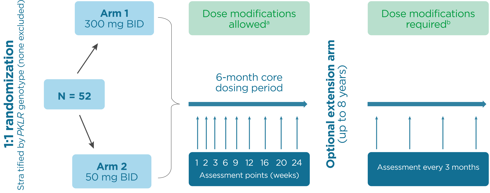

Drive-PK Study Design
Status: Completed
- Multicenter study (eight sites in North America, six sites in Europe)
- Patients were randomized 1:1 to receive open-label mitapivat 50 mg or 300 mg BID for a 24-week core period
- Eligible patients could opt to continue treatment in an ongoing extension phase

- Treatment with mitapivat was associated with a rapid, clinically significant increase in hemoglobin in 50% of treated patients
- Hemoglobin response was sustained for up to 35 months with ongoing treatment and was associated with improvements in markers of hemolysis
- Hemoglobin responses were observed in patients with diverse PKLR genotypes, all of whom had a lease one missense mutation
- The most common adverse events occurred at drug initiation and were transient
- Grade 3 or greater adverse events that were considered by the investigator to be drug related were seen in 17% of patients treated daily for up to 35 months
- This study supports the potential of mitapivat as an investigational long-term disease-modifying therapy for PK deficiency
- The efficacy and safety of mitapivat continue to be studied in the extension phase as well as in two ongoing phase 3 studies (NCT03559699, NCT03548220)